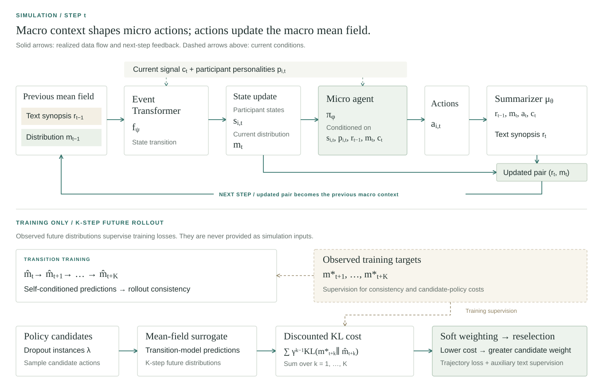
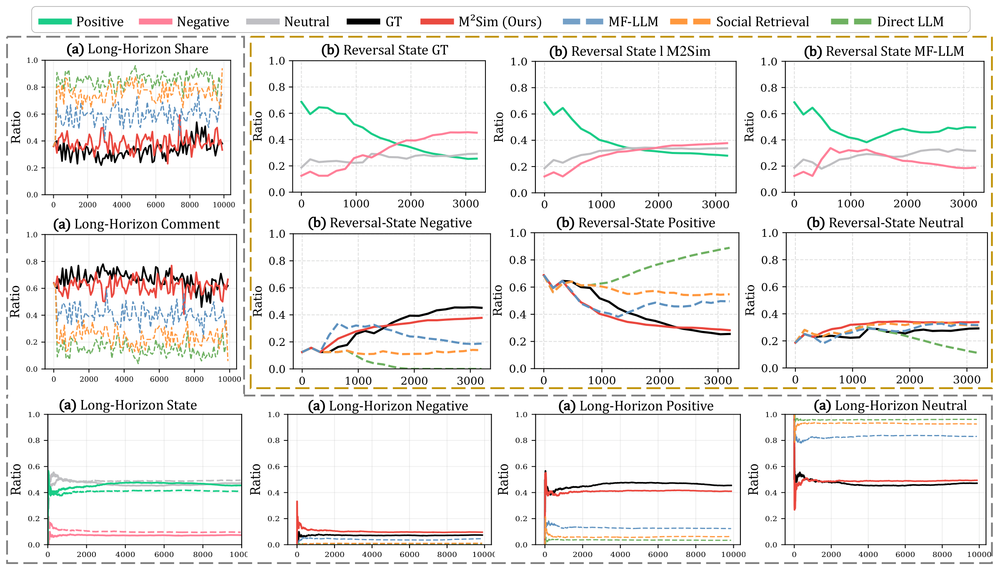

M2Sim
Macro dynamics · Micro states
Coupling Macro Dynamics and Micro States for Long-Horizon Social Simulation
Macro–micro coupled social simulation with evolving individual states and collective dynamics.
1 Huazhong University of Science and Technology, Wuhan, China
2 National University of Singapore, Singapore
3 Institute of Automation, Chinese Academy of Sciences, Beijing, China
† Corresponding author: skyesong@hust.edu.cn

01 / Research context
Abstract
Social network simulation aims to model collective opinion dynamics in large populations, but existing LLM-based simulators primarily focus on aggregate dynamics and largely ignore individual internal states. This limits their ability to capture opinion reversals driven by gradual individual shifts and makes them unreliable over long-horizon simulations.
Unlike existing methods that collapse dynamics into macro-only updates, we propose a social simulation framework, M2Sim, which tightly couples macro-level collective dynamics with micro-level individual states.
We explicitly model micro-level opinion states with a state transition mechanism, coupling Macro-level collective dynamics with Micro-level states. This allows the opinion-state distribution to evolve gradually, rather than triggering instant reactions, enabling the simulator to distinguish states close to or far from switching, capture opinion reversals, and maintain accuracy over long-horizon simulations.
Across real-world events, our M2Sim supports stable simulation of long-horizon social events with up to 40,000 interactions, while reducing long-horizon KL divergence by 75.3% (1.2490 → 0.3089) and reversal KL by 66.9% (1.6425 → 0.5434), significantly mitigating the drift observed in MF-LLM.
02 / Contributions
Highlights
M2Sim addresses three central challenges in social simulation: connecting individual and collective dynamics, sustaining long-horizon evolution, and capturing opinion reversals.
-
Micro–Macro Coupling
M2Sim couples macro-level collective dynamics with micro-level opinion states through an explicit state-transition mechanism. Agents act on both their individual states and the evolving mean field, connecting individual behavior with collective opinion evolution.
-
Long-Horizon Dynamics
Gradual changes in opinion require modeling beyond instantaneous reactions. A learned state-transition model and multi-step rollout consistency help preserve collective trajectories over long horizons, addressing accumulated drift, variance damping, and majority lock-in.
-
Opinion Reversals
Capturing a reversal requires tracking when opinions change and how far they shift. By conditioning actions on evolving opinion states and evaluating their multi-step impacts, M2Sim supports action reselection in response to exogenous signals, addressing the inertia that can obscure turning points.
03 / Inside the framework
Method
Two synchronized mean-field channels connect collective dynamics with individual actions. A separate training loop learns their longer-term consequences.


- Dual channels
- The text synopsis rt summarizes interactions and signals; the distribution mt tracks opinion-state proportions. Both condition micro agents alongside their states, personalities, and current signals.
- Recursive feedback
- The Event Transformer updates participant states and the distribution. Realized actions update the text synopsis through the summarizer; the resulting pair becomes the next step’s macro context.
- Training-only rollout
- Self-conditioned predictions support transition consistency and candidate-policy scoring. Discounted KL costs guide soft weighting and action reselection, with auxiliary text supervision. Observed future distributions supervise training; agents never receive the real future during simulation.
04 / Experimental evidence
Results
Trajectory alignment, main comparisons, and component ablations across short-horizon, long-horizon, and reversal simulations.

Main experiments
Comparison across the three simulation settings reported in the paper.
| Method | KL Div. ↓ | Wass. Dist. ↓ | DTW ↓ | Macro F1 ↑ | Micro F1 ↑ | NLL Loss ↓ |
|---|---|---|---|---|---|---|
| Short-Horizon · Default Steps | ||||||
| Direct LLM | 0.1101 | 0.1661 | 0.1578 | 0.5805 | 0.6953 | 4.0674 |
| Social Retrieval | 0.1051 | 0.1578 | 0.1500 | 0.5829 | 0.6905 | 3.9532 |
| MF-LLM | 0.0492 | 0.1062 | 0.0944 | 0.5861 | 0.6975 | 3.9336 |
| M²Sim (Ours) | 0.0453 | 0.1006 | 0.0995 | 0.5897 | 0.7082 | 3.9156 |
| Long-Horizon · Full Steps | ||||||
| Direct LLM | 1.8300 | 0.3746 | 0.4003 | 0.3922 | 0.5621 | 4.6141 |
| Social Retrieval | 1.6554 | 0.3515 | 0.3816 | 0.4014 | 0.5962 | 4.5294 |
| MF-LLM | 1.2490 | 0.3251 | 0.2886 | 0.4643 | 0.6153 | 3.9198 |
| M²Sim (Ours) | 0.3089 | 0.1773 | 0.1666 | 0.4805 | 0.6393 | 3.7655 |
| Reversal · Full Steps | ||||||
| Direct LLM | 5.4883 | 0.4535 | 0.4377 | 0.3531 | 0.4837 | 4.6469 |
| Social Retrieval | 3.5539 | 0.4432 | 0.3978 | 0.3690 | 0.5017 | 4.2002 |
| MF-LLM | 1.6425 | 0.2763 | 0.2425 | 0.4158 | 0.5721 | 3.8841 |
| M²Sim (Ours) | 0.5434 | 0.2127 | 0.1986 | 0.4533 | 0.6065 | 3.8384 |
Mean values from Table 1. ↓ Lower is better; ↑ higher is better. Bold marks the best value within each setting. Relative improvement percentages are omitted for readability.
Ablation study
Removing LCT-State, LCT-Policy, or Sampling from the full framework.
| Method | KL Div. ↓ | Wass. Dist. ↓ | DTW ↓ | Macro F1 ↑ | Micro F1 ↑ | NLL Loss ↓ |
|---|---|---|---|---|---|---|
| Short-Horizon · Default Steps | ||||||
| M²Sim (Ours) | 0.0453 | 0.1006 | 0.0995 | 0.5897 | 0.7082 | 3.9156 |
| w/o LCT-State | 0.0449 | 0.1120 | 0.0802 | 0.5825 | 0.6828 | 4.0064 |
| w/o LCT-Policy | 0.0491 | 0.1051 | 0.0856 | 0.5809 | 0.6962 | 3.9403 |
| w/o Sampling | 0.0649 | 0.1115 | 0.1081 | 0.5925 | 0.7014 | 3.9206 |
| Long-Horizon · Full Steps | ||||||
| M²Sim (Ours) | 0.3089 | 0.1773 | 0.1666 | 0.4805 | 0.6393 | 3.7655 |
| w/o LCT-State | 0.8770 | 0.2123 | 0.2104 | 0.4725 | 0.6187 | 3.9414 |
| w/o LCT-Policy | 0.5872 | 0.2028 | 0.1730 | 0.4314 | 0.5765 | 3.9738 |
| w/o Sampling | 0.3536 | 0.1885 | 0.1710 | 0.4482 | 0.5774 | 3.7782 |
| Reversal · Full Steps | ||||||
| M²Sim (Ours) | 0.5434 | 0.2127 | 0.1986 | 0.4533 | 0.6065 | 3.8384 |
| w/o LCT-State | 1.1748 | 0.2536 | 0.2319 | 0.4649 | 0.6232 | 4.0610 |
| w/o LCT-Policy | 0.9359 | 0.2396 | 0.1808 | 0.4309 | 0.5592 | 4.2301 |
| w/o Sampling | 0.7634 | 0.2281 | 0.1897 | 0.4214 | 0.5721 | 4.0404 |
Mean values from Table 2. ↓ Lower is better; ↑ higher is better. Bold marks the best value within each setting. Relative change percentages are omitted; metric values retain the paper’s precision.
05 / Work with M2Sim
Usage
Clone the repository, install its dependencies with Poetry, and create a local environment configuration.
git clone https://github.com/AI4SS/M2Sim.git
cd M2Sim
poetry install
cp .env.example .envConfigure .env for your environment and supply processed event JSON data, trained policy and mean-field model paths, and an Event Transformer checkpoint. In the configured Python environment, the single-event entrypoint is:
python main/script/run_m2sim.py \
--file_name /path/to/event.json \
--simulation_start 50 \
--model 1.5B \
--batch_size 16 \
--st_model_path /path/to/event_transformer_best.ptReplace the placeholder paths with your data and checkpoint. Set --policy_model_path and --mf_model_path when supplying trained model directories explicitly. See the repository README for full setup, data preparation, and evaluation instructions.
Reference
Citation
If this work is useful to your research, please cite the paper.
@misc{zhang2026couplingmacrodynamicsmicro,
title={Coupling Macro Dynamics and Micro States for Long-Horizon Social Simulation},
author={Yunyao Zhang and Yihao Ai and Zuocheng Ying and Qirui Mi and Junqing Yu and Wei Yang and Zikai Song},
year={2026},
eprint={2604.05516},
archivePrefix={arXiv},
primaryClass={cs.SI},
url={https://arxiv.org/abs/2604.05516},
}